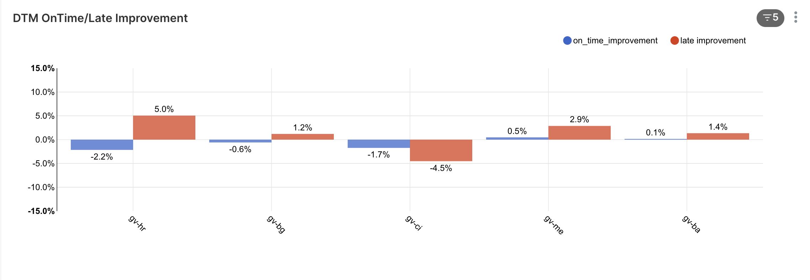
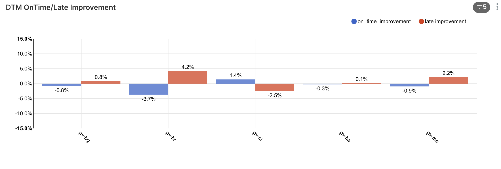

Problem
Stacked orders (~20% of global orders) are ~10pp less likely to be on time — 70% vs 81% (Q1, global).
Stacked orders quietly bend the promise we make to customers. Team “PDTs are cool” set out to find the features that explain it — and the markets where it matters most.
Meet the team ↓A cross-functional squad obsessed with one number customers actually feel: the Promised / Predicted Delivery Time. We came together for the hackathon to make that number honest for the hardest case — stacked orders.
Stacking is ~20% of global orders and an important lever for profitability. Yet high lateness is one of the reasons — among others — that we don't stack to the highest potential.
When a rider carries two (or more) orders at once — a stacked order — the delivery the customer was promised competes with someone else's. The result: stacked orders arrive on time far less often than non-stacked ones. We measured the gap globally for Q1.
Top 10 markets by the country-ranking dashboard's default ranking — stacked (red) vs non-stacked (navy). see the live dashboard ↗
cl.orders,
trailing 30 days) — same numbers shown in the embedded dashboard's “Stacked vs non-stacked”
tab. Δ = stacked − non-stacked; red = stacked performs worse.
Global headline figures above are Q1 2026.We worked top-down from the model, then bottom-up from operational reality — and met in the middle on the features that actually move stacked-order PDTs.
Sat down with our DTM owners Dongin and Zhamal to walk the current production architecture and the features used in its sub-models — and to find where stacked orders are (and aren't) represented.
Decomposed the problem into operational knowledge, focusing hardest on dispatching and rider issues — the two levers most tied to stacking.
Filled up our knowledge gaps by talking to our friends in rider operations — ground-truthing our hypotheses against what actually happens on a stacked trip: acceptance, wait, and hand-off frictions.
Whiteboarding the delivery journey end-to-end, we mapped candidate features stage by stage — then zeroed in on the dispatch/rider levers (and ultimately Δ CPU).
Estimated prep time
Vendor restrictions
Order locale at vendor
Stacking rate / zone density at vendor
Building access / “walls”
Foot traffic at vendor
Map & routing (Google) signals
Traffic on the line
Distance to customer
Speed of vehicle / vehicle type
Special errands & detours
Near-customer time
Walk-in time
Walk-out time at customer
Dispatch time
Rider acceptance time
Rider acceptance rate = f(accept time)
Mean delay per zone
On-break / available riders
Gap between two orders’ committed pickup times — the same signal the dispatcher already uses to gate stacking, but invisible to today’s PDT model. (See §4.)
Source: team whiteboard (IMG 7172).
Two things pointed us at the dispatch layer. First, riders take measurably longer to accept stacked orders. Second, the dispatcher already gates stacking on Δ CPU — a signal today's PDT model never sees.
cl.orders · rider_reaction_time,
Q1 2026 global, completed non-pre-order orders. Stacked orders take +1.2s (+22%)
longer to accept on average.CPU = Committed Pick-Up time — when a rider is committed to collect an order. Δ CPU is the gap between the committed pickup times of two orders the algorithm is considering stacking together.
Dispatch only stacks them when Δ CPU ≤ a max threshold (~4 min); beyond that, a penalty blocks the stack so a rider isn't sent to wait too long at the second vendor.
Source: LOGRO Squad Update — MaxDeltaCPU dispatch constraint. The dispatcher acts on Δ CPU; the PDT model doesn't — which is the gap we set out to close.
To pick where stacked-order PDT fixes would pay off most, we built a live country ranking dashboard — a weighted rank-sum over KPI signals you can toggle in the browser. It re-ranks instantly, no re-query needed. The shortlist it produced: gv-hr, gv-ci, gv-bg, gv-me, gv-ba, gt.
With the features and target markets in hand, we trained the DTM with our candidate
features against a control, on a dedicated cpl-hackathon branch, and ran an offline
evaluation. We coded and tested two features in parallel — Δ CPU and rider acceptance.
Two candidate features — Δ CPU and rider acceptance — each vs. the control model, across the target markets (gv-hr, gv-ci, gv-bg, gv-me, gv-ba, gt).
Trained on Metaflow — 1-month window, execution date 2026-05-20 — one branch per feature, each compared against the control models offline.
Change in stacked vs. non-stacked PDT accuracy / on-time per feature — so we could see which one actually earns its place.
Each candidate feature (e.g. rider-acceptance) sat on its own git branch, so we could build, train, and evaluate features independently and in parallel, without conflicts.
On each branch we drove an AI agent wired into our DTM repo with full company context — it knows our model structure, our BigQuery schemas, and the team's conventions. So it didn't write generic code; it produced feature SQL and pipeline wiring that dropped straight into our existing DTM pipeline.
Describe the idea → the agent writes the BigQuery feature, wires it into the pipeline, and runs the per-country accuracy eval the same way we already do it.
• Branch per feature → parallel, isolated feature dev.
• DTM-aware AI agent (knows our model, BigQuery schema, conventions) → features built in
hours, not days.
• BigQuery end-to-end → the agent builds the feature data and runs per-country evaluation
directly.
“DTM-aware” = we set up CLAUDE.md and AI-context docs directly in the repo,
so the agent reads our model, data, and conventions as built-in context.
5 of 6 markets in. Of the two features we tested in parallel, Δ CPU moved the needle and rider-acceptance didn't — pointing to a real GMV opportunity.

cpl-hackathon,
1-month training, exec 2026-05-20 — only gt still running.Across all orders the effect is muted and mixed — expected, since Δ CPU is a stacking signal. The clear movement shows up where it should: on stacked orders, above.

Tested in parallel on gv-bg, gv-ci, gv-hr. Baseline → rider-acceptance moved metrics by only hundredths of a point — effectively no lift, so we dropped it. That's the point of branch-per-feature testing: Δ CPU earned its place; rider acceptance didn't.
Plugging the Δ CPU late-tail result into the CPL GMV back-of-envelope (2025 base: 2.28B orders/yr, €13.36/order, 0.90% CX cancellation rate).
• Δ CPU cuts the all-order late share by ~1.0pp (5-market avg) → ~6% fewer late
orders (base Late>10 ≈ 16%).
• Late deliveries drive CX cancellations; if those fall in proportion, that's a 2–6%
cut in the 0.90% CX-fail rate.
• At €13.36/order over 2.28B yearly orders, each 1% cut ≈ €2.7 Mio → €5–16 Mio/yr.
• Sanity check: the model's own “better on-time & late shares” assumption (5%) lands at
€13.7 Mio — near its “+15 Mio EUR GMV” headline.
Back-of-envelope on the global 2025 base (Δ CPU is a rollable DTM feature), cancellation lever only — excludes the retention lever (model adds ~€24 Mio). Source: BOE: GMV calc for CPL Top 10.
Stacked orders (~20% of global orders) are ~10pp less likely to be on time — 70% vs 81% (Q1, global).
Mapped the DTM, focused on dispatch & rider levers, talked to riders — then tested features in parallel with a DTM-aware AI agent.
Δ CPU shortens the stacked-order late tail in 4 of 5 markets (up to +5pp). Rider-acceptance gave no lift.
≈ €5–16 Mio/yr GMV from fewer late-driven cancellations (central ~€14 Mio).
PDTs are cool,
but our team is COOLER 😎